건설기계설비산업기사 (2010-03-07 기출문제)
1과목: 기계제작법
1. 보통선반의 주요 구성 부분은?
- 니이, 컬럼, 주축대, 왕복대
- 니이, 컬럼, 심압대, 베드
- 주축대, 왕복대, 심압대, 베드
- 주축대, 왕복대, 심압대, 테이블
(정답률: 알수없음)

2. 비교 측정기(comparator)에 해당되지 않는 것은?
- 하이트 게이지
- 다이얼 게이지
- 옵티미터
- 전기 마이크로미터
(정답률: 알수없음)
3. 성형 공구사이에 소재를 넣고 가압한 상태에서 직선 운동이나 회전운동을 시켜 성형공구와 같은 형상으로 소재표면에 압축 성형을 하여 기어나 나사를 제작하는 것은?
- 인발
- 용접
- 전조
- 압연
(정답률: 알수없음)
4. 삼침법이란 주로 나사의 어느 부분을 측정하는 방법인가?
- 바깥지름
- 나사산의 각도
- 유효지름
- 피치
(정답률: 알수없음)
5. 파텐팅(partenting) 열처리를 옳게 나타낸 것은?
- 냉간 가공 전에 시행하는 항온 변태 처리이다.
- 냉간 가공 후에 시행하는 계단 담금질이다.
- 펄라이트 조직을 안정화 시키는 열처리이다.
- 미세한 오스테나이트 조직을 만드는 열처리이다.
(정답률: 알수없음)
6. CNC공작기계의 가공 프로그램에서 “M” code가 수행하는 기능은?
- 보조기능
- 준비기능
- 주축기능
- 이송기능
(정답률: 알수없음)
7. 유동형 칩의 발생조건이 아닌 것은?
- 경사각(rake angle)이 작을 때
- 절삭 깊이가 적을 때
- 절삭 속도가 빠를 때
- 윤활성이 좋은 절삭 유체를 사용할 때
(정답률: 알수없음)
8. 고온 가공(단조, 압연 등)시 강철에 유황(S) 성분이 많을 시 어떤 영향을 주는가?
- 고온풀림
- 적열취성
- 저온풀림
- 청열취성
(정답률: 알수없음)
9. 가스용접에서 아세틸렌가스 발생기의 형식이 아닌 것은?
- 발전식
- 침수식
- 투입식
- 주수식
(정답률: 알수없음)
10. 가스 용접에서 모재의 두께가 6mm일 경우 용접봉의 지름은 약 몇 mm 가 적당한가?
- 1mm
- 2mm
- 4mm
- 8mm
(정답률: 알수없음)
11. 길이 측정기가 아닌 것은?
- 버니어 캘리퍼스(vernier callpers)
- 마이크로미터(micrometer)
- 옵티컬 플랫(optical flat)
- 두께 게이지(thickness guage)
(정답률: 알수없음)
12. 고정밀도 3차원 측정기에 채용되고 있는 구조형태로서 측정테이블과 새들(saddle), 컬럼(column) 및 기타의 구조 부재로서 가장 높은 기하학적인 정밀도를 얻을 수 있고, 이에 따라서 각 축이 모터에 의해 구동되는 측정기의 구조형태는?
- fiexd type cantilever type
- moving bridge type
- column type
- gantry type
(정답률: 알수없음)
13. 목재, 멜트, 피혁 등 탄성이 있는 재료로 된 바퀴 표면에 부착시킨 미세한 연삭 입자를 사용하여 연삭 작용을 하게 하여 공작물 표면을 다듬는 가공은 무엇인가?
- 폴리싱
- 태핑
- 버니싱
- 로울러 다듬질
(정답률: 알수없음)
14. 스프링에 숏 피닝(Shot peening) 가공을 하는 가장 큰 이유는?
- 가공면이 매끈한 거울면을 얻기 위해
- 기계가공으로 다듬질하기 어려운 면을 작은 강구로 두드려서 아름다운 면을 얻기 위해
- 표면을 매끈히 하여 동시에 피로한계와 기계적 성질을 향상시키기 위해
- 거스러미를 떼어 보기 좋게 하기 위해
(정답률: 알수없음)
15. 압출가공에서 압출비(extrusion ratio)을 옳게 표시한 것은?
- 빌렛의 초기길이 / 압출후의 길이
- 압출후의 길이 / 빌렛의 초기길이
- 압출후의 단면적 / 빌렛의 초기단면적
- 빌렛의 초기단면적 / 압출후의 단면적
(정답률: 알수없음)
16. 유효 단조면적이 500mm2이고 변형저항이 15.4 kgf/mm2인 단조작업을 할 때, 기계효율이 0.7이면 단조 프레스의 용량은?
- 11 ton
- 15 ton
- 17 ton
- 23 ton
(정답률: 알수없음)
17. 절삭저항에서 절삭방향으로 평행한 분력은 무엇인가?
- 주분력
- 이송분력
- 배분력
- 종분력
(정답률: 알수없음)
18. 강이나 주감에 사용되는 호닝 숫돌(hone)의 입자는?
- 다이아몬드
- WA
- H.S.S
- GC
(정답률: 알수없음)
19. 공작물 고정(clamping) 장치가 없는 지그는?
- 템플릿 지그(template jig)
- 플레이트 지그(plate jig)
- 박스 지그(box jig)
- 테이블 지그(table jig)
(정답률: 알수없음)
20. 절삭온도를 측정하는 방법으로 적합하지 않은 것은?
- 칩의 색깔로 의하여 측정하는 방법
- 칼로리미터(calorimeter)에 의한 측정
- 방사능에 의한 방법
- 열전대를 통한 방법
(정답률: 알수없음)
2과목: 재료역학
21. 그림과 같은 양단을 고정한 균일단면 봉의 m-n단면에 작용하는 축 하중 P는 몇 N 인가? (단, R1 = 250N, R2 = 250N, a = 30cm, b = 30cm 이다.)
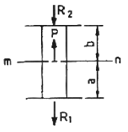
- 480
- 490
- 500
- 510
(정답률: 알수없음)
22. 길이 1m, 지름 2cm의 강재를 10kN의 힘으로 인장했을 때 0.15mm 늘어났다. 이 재료의 탄성계수는 약 몇 GPa 인가?
- 212
- 232
- 252
- 272
(정답률: 알수없음)
23. 지름 d = 5cm의 축을 7° 비틀었을 경우 최대전단응력이 95MPa 이라 하면 이 축의 길이 L은 약 몇 cm 인가? (단, 이 축의 전단탄성계수 G = 85 GPa 이다.)
- 237
- 273
- 287
- 294
(정답률: 알수없음)
24. 곧은 봉에 축 하중을 주었을 때 포아송비(Poisson's ratio)의 정의로 옳은 것은?
- 축(종) 방향의 늘어난 량 / 가로(횡) 방향의 수축량
- 축(종) 방향의 변형률 / 가로(횡) 방향의 변형률
- 가로(횡) 방향의 수축량 / 축(종) 방향의 늘어난 량
- 가로(횡) 방향의 변형률 / 축(종) 방향의 변형률
(정답률: 알수없음)
25. 그림과 가이 길이가 ℓ, 탄성계수 E, 단면적 A인 균열 단면봉이 연직하게 매달려 있다. 봉의 자중 w만을 고려했을 때 신장량은? (단, 비중량은 γ N/m3 이다.)
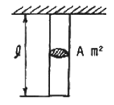
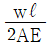
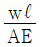
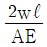
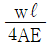
(정답률: 알수없음)
26. 그림과 같은 I형 단면보에 전단력 V가 작용할 때 보의 단면에 작용하는 전단응력 분포도의 형태로 옳은 것은?
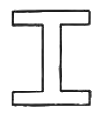
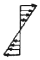
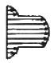
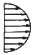
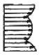
(정답률: 알수없음)
27. 다음과 같은 단면 중 단면계수가 가장 큰 것은?
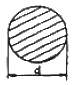
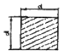
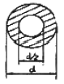
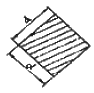
(정답률: 알수없음)
28. 지름 30cm, 두께 10mm의 주철관 원통형 압력용기에서 허용응력을 10MPa 이라 하면 몇 kPa의 내압까지 사용할 수 있는가?
- 333
- 476
- 666
- 1333
(정답률: 알수없음)
29. 지름 30cm의 원형단면을 가진 보가 그림과 같은 하중을 받을 때 보에 발생하는 최대 굽힘응력은 약 몇 MPa 인가?
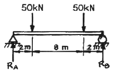
- 17.7
- 27.7
- 37.7
- 47.7
(정답률: 알수없음)
30. 그림과 같은 하중 상태에 있는 단순보에서 A 지점의 반력 RA는?
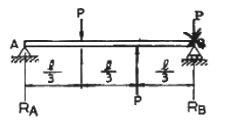
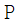
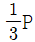
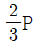
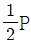
(정답률: 알수없음)
31. 길이 3m의 단순보가 균일 분포하중 ω = 5kN/m를 받고 있다. 보의 단면이 b×h = 10cm×20cm, 탄성계수 E = 10GPa일 때 이 보의 최대 처짐량은 약 몇 cm 인가?
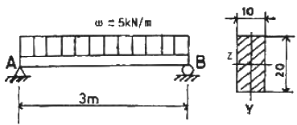
- 0.57 cm
- 0.63 cm
- 0.69 cm
- 0.79 cm
(정답률: 알수없음)
32. 길이 L인 단순보의 전길이에 균일분포하중 ω가 작용할 때의 최대 굽힘모멘트는?
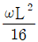
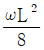
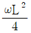
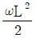
(정답률: 알수없음)
33. 한 변의 길이 20cm인 정사각형 단면의 짧은 기둥에서 그림과 같이 단면의 중심에서 x축 방향으로 5cm의 편심거리에 압축하중 500kN이 작용한다면 최대 압축응력은 약 몇 MPa 인가?
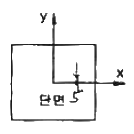
- 21.25
- 31.25
- 41.25
- 51.25
(정답률: 알수없음)
34. 지름 2cm의 재료가 P = 24kN의 전단 하중을 받아서 0.00075 radian의 전단 변형률이 생겼다. 이 때, 이 재료의 전단탄성계수 G의 값은 몇 GPa 인가?
- 75
- 84
- 95
- 102
(정답률: 알수없음)
35. 그림과 같은 평면 응력상태에서 σx = 60MPa, σy = 30MPa, τxy = τyx = 15MPa 일 때 주평면의 한 경사각 θ는?
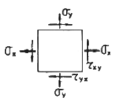
- θ = 15°
- θ = 22.5°
- θ = 30°
- θ = 45°
(정답률: 알수없음)
36. 그림과 같이 균일 분포하중을 받는 보에 대한 전단력 선도로 옳은 것은? (단, 부호에 대한 규약은 그림 참조)
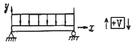
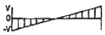
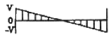
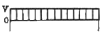
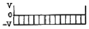
(정답률: 알수없음)
37. 강철봉의 양단에 10N·m의 비틀림 모멘트가 가해져 강철봉에 1도(degree)의 비틀림이 발생하였다. 이 비틀림에 의해 강철봉에 저장된 탄성 에너지의 크기는 약 몇 N·m 인가?
- 0.087
- 0.174
- 5
- 10
(정답률: 알수없음)
38. -2℃에서 양단이 고정되어 있는 지름 30mm의 강봉이 열을 받아 온도가 32℃로 되었을 때 발생하는 열응력은? (단, 탄성계수 E = 210GPa 이고, 선팽창계수 α = 1.15×10-5/℃ 이다.)
- 82.1 MPa(압축)
- 82.1 MPa(인장)
- 8.21 MPa(인장)
- 8.21 MPa(압축)
(정답률: 알수없음)
39. 축방향 하중이 작용할 때 횡단면과 θ만큼 경사진 단면에 생기는 최대 전단응력 값에 대한 설명으로 옳은 것은?
- θ = 90° 의 단면에 생긴다.
- θ = 45° 의 단면에 생기고 그 값은 직각단면에 생기는 수직응력 값과 같다.
- θ = 45° 의 단면에 생기고 수직응력의 1/2 이다.
- θ = 90° 의 단면에 생기고 수직응력의 1/3 이다.
(정답률: 알수없음)
40. 바깥지름 20cm, 안지름 12cm의 중공 원형축에 축 인장력 P가 작용하여 생긴 응력이 2.5MPa 이었다. 작용한 인장력 P의 크기는 약 몇 kN 인가?
- 4
- 50
- 70
- 100
(정답률: 알수없음)
3과목: 기계설계 및 기계재료
41. 연강의 사용 용도로 적합하지 않는 것은?
- 볼트
- 리벳
- 파이프
- 게이지
(정답률: 알수없음)
42. 다음 중 합금이 아닌 것은?
- 니켈
- 황동
- 두랄루민
- 켈밋
(정답률: 알수없음)
43. 담금질 조직 중 가장 경도가 높은 것은?
- 펄라이트
- 마텐자이트
- 솔바이트
- 트루스타이트
(정답률: 알수없음)
44. 순철에 대한 설명으로 잘못된 것은?
- 투자율이 높아 변압기, 발전기용으로 사용된다.
- 단접이 용이하고, 용접성도 좋다.
- 바닷물, 화학약품 등에 대한 내식성이 좋다.
- 고온에서 산화작용이 심하다.
(정답률: 알수없음)
45. 풀림 처리의 목적으로 가장 적합한 것은?
- 연화 및 내부응력 제거
- 경도의 증가
- 조직의 오스테나이트화
- 표면의 경화
(정답률: 알수없음)
46. 다음 구조용 복합재료 중 섬유강화 금속은?
- FRT
- SPF
- FRM
- FRP
(정답률: 알수없음)
47. 회주철(gray cast iron)의 조직에 가장 큰 영향을 주는 것은?
- C와 Si
- Si와 Mn
- Si와 S
- Ti와 P
(정답률: 알수없음)
48. 6:4 황동에 1~2%Fe을 첨가한 것으로, 강도가 크고 내식성이 좋아서 광산기계, 선박용 기계, 화학 기계 등에 사용하는 황동은?
- 에드미럴티 황동
- 네이벌 황동
- 델타메탈
- 톰백
(정답률: 알수없음)
49. 탄소강에서 공석강의 현미경 조직은?
- 초석페라이트와 펄라이트
- 초석시멘타이트와 펄라이트
- 층상펄라이트와 시멘타이트의 혼합조직
- 공석 페라이트와 공석 시멘타이트의 혼합조직
(정답률: 알수없음)
50. 담금질 효과와 가장 관련이 적은 것은?
- 가열온도
- 냉각속도
- 자성
- 결정입도
(정답률: 알수없음)
51. 기본 부하용량이 33000N 이고, 베어링하중이 4000N 인 볼베어링이 900rpm으로 회전할 때, 베어링의 수명시간은 약 몇 시간인가?
- 9⑤0
- 9500
- 10400
- 11500
(정답률: 알수없음)
52. 10kN의 하중을 올리는 나사 잭의 나사 막대의 지름을 몇 mm로 하면 가장 적당한가? (단, 나사막대의 허용응력은 60MPa로 하고, 비틀림 응력은 수직응력의 1/3 정도로 본다.)
- 12mm
- 18mm
- 22mm
- 25mm
(정답률: 알수없음)
53. 나사를 용도에 따라 체결용과 운동용으로 분류할 때 운동용 나사에 속하지 않는 것은?
- 사각 나사
- 사다리꼴 나사
- 톱니 나사
- 삼각 나사
(정답률: 알수없음)
54. 지름 60mm의 강축에 350rpm으로 50kW를 전달하려고 할 때 허용전단응력을 고려하여 적용 가능한 묻힘 키(sunk key)의 최소 길이(ℓ)는 약 몇 mm 인가? (단, 키의 허용전단응력 τ = 40[N/mm2], 키의 규격(폭×높이) b×h = 12mm×10mm 이다.)
- 80
- 85
- 90
- 95
(정답률: 알수없음)
55. SI 단위와 기호로 잘못 짝지어진 것은?
- 주파수 – 헤르츠(Hz)
- 에너지 – 줄(J)
- 전기량, 전하 – 와트(W)
- 전기저항 – 옴(Ω)
(정답률: 알수없음)
56. 지름 5cm의 축이 300rpm으로 회전할 때 최대로 전달할 수 있는 동력은 약 몇 kW 인가? (단, 축의 허용비틀림응력은 39.2 MPa 이다.)
- 8.59
- 16.84
- 30.23
- 181.38
(정답률: 알수없음)
57. 역류를 방지하며 유체를 한쪽 방향으로만 흘러가게 하는 밸브(Valve)로 적합한 것은?
- 체크 밸브
- 감압 밸브
- 시퀀스 밸브
- 언로드 밸브
(정답률: 알수없음)
58. 다음 맟라자 중 무단(無段)변속장치로 이용할 수 없는 것은?
- 홈 마찰차
- 에반스 마찰차
- 원판 마찰차
- 구면 마찰차
(정답률: 알수없음)
59. 스플라인에 대한 설명으로 틀린 것은?
- 축에 여러 개의 같은 키 홈을 파서 여기에 맞는 한 짝의 보스 부분을 만들어 축방향으로 서로 미끄러져 운동할 수 있게 한 것이다.
- 종류에는 각형 스플라인, 헬리컬 스플라인, 세레이션 등이 있다.
- 용도는 주로 변속장치, 자동차 변속기 등의 속도 변환용 축에 사용된다.
- 키 보다 큰 토크를 전달할 수 있다.
(정답률: 알수없음)
60. 400rpm으로 전동축을 지지하고 있는 미끄럼 베어링에서 저널의 지름 d = 6cm, 저널의 길이 ℓ = 10cm 이고, 4.2kN의 레이디얼 하중이 작용할 때, 베어링 압력은 몇 MPa 인가?
- 0.5
- 0.6
- 0.7
- 0.8
(정답률: 알수없음)
4과목: 유압기기 및 건설기계일반
61. 릴리프 밸브에서 밸브 시트를 두드려서 비교적 높은 음을 발생시키는 일종의 자려 진동현상과 가장 관계있는 것은?
- 캐비테이션
- 댐핑
- 채터링
- 압력의 맥동
(정답률: 알수없음)
62. 베인 펌프에 관한 설명 중 틀린 것은?
- 카트리지 방식으로 보수가 용이하다.
- 기어펌프, 피스톤 펌프와 비교할 때, 펌프 출력에 비해 형상치수가 작다.
- 기어펌프, 피스톤 펌프에 비해 토출 압력의 맥동이 크다.
- 베인의 마모로 인한 압력저하가 적다.
(정답률: 알수없음)
63. 그림의 기호는 공유압 기호에서 무슨 기호인가?
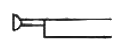
- 누름버튼
- 누름-당긴버튼
- 당김버튼
- 레버버튼
(정답률: 알수없음)
64. 유압제어밸브 중 방향제어밸브에 속하지 않는 것은?
- 체크 밸브
- 셔틀 밸브
- 감속 밸브
- 카운터 밸런스 밸브
(정답률: 알수없음)
65. 다음 기호 중 1방향 유동, 1방향 회전용의 정용량형 유압펌프·모터인 것은?
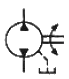
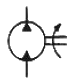
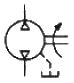
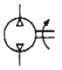
(정답률: 알수없음)
66. 미리 정해진 순서에 따라 제어 작동의 각 단계를 순차적으로 진행해 가는 회로는?
- 감압 회로
- 중압 회로
- 시퀀스 회로
- 정토크 회로
(정답률: 알수없음)
67. 유압작동유에서 요구되는 성질에 대한 설명으로 틀린 것은?
- 점도지수가 작을 것
- 항유화성이 좋을 것
- 비압축성일 것
- 소포성이 좋을 것
(정답률: 알수없음)
68. 일반적인 유압 장치의 장점이 아닌 것은?
- 속도를 무단으로 변속할 수 있다.
- 작은 장치로 큰 힘을 얻을 수 있다.
- 온도가 변화해도 정도에 영향을 미치지 않아서 액추에이터의 출력이 안정적이다.
- 자동제어가 가능하다.
(정답률: 알수없음)
69. 어느 베인 모터의 공급 압력이 80 kgf/cm2이고 1회전당 유량이 40 cc/rev, 1200 rpm 으로 회전하고 있다. 이 모터의 최대 토크는 약 몇 kgf·m 인가?
- 4.7
- 5.1
- 6.3
- 7.4
(정답률: 알수없음)
70. 파스칼의 원리를 설명한 것은?
- 힘은 질량과 가속도의 곱이다.
- 압력과 체적의 곱은 일정하다.
- 압력, 속도, 위치 수두의 합은 일정하다.
- 밀폐된 용기 속에 정지 유체의 일부에 가해지는 압력은 유체의 모든 부분에 동일한 힘으로 전달된다.
(정답률: 알수없음)
71. 드롭 해머의 특징으로 맞지 않는 것은?
- 설비가 편리하고 작업이 용이하다.
- 낙하고를 높여서 타격 에너지를 크게 할 수 있다.
- 진동과 소음이 많다.
- 타설 작업이 디젤해머 보다 빠르다.
(정답률: 알수없음)
72. 버킷을 좌우 어느 쪽으로나 기울일 수 있어 협소한 장소에서 트럭에 적재할 수 있는 로더에 해당하는 것은?
- 프런트 엔드형 로더
- 백호 셔틀형 로더
- 사이드 덤프형 로더
- 오버 헤드형 로더
(정답률: 알수없음)
73. 롤러에서 다짐폭이란?
- 1회 통과에서 다져지는 최소 두께
- 2회 통과에서 다져지는 최소 두께
- 1회 통과에서 다져지는 최소 폭
- 2회 통과에서 다져지는 최소 폭
(정답률: 알수없음)
74. 굴삭기 제원에서 붐 푸트 핀 중심에서 암 고정 핀 중심까지의 거리를 무엇이라고 하는가?
- 붐 길이
- 암 길이
- 작업 반경
- 최대 굴삭 깊이
(정답률: 알수없음)
75. 불도저에서 1시간당 작업량을 K(m3/h), 사이클 시간을 Cm(min), 토량환산 계수를 f, 도저의 작업효율을 E라고 할 때, 블레이드 용량(1회의 흙 운반량, m3) q는 어떤 식으로 계산되는가?
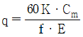
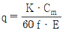
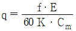
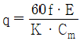
(정답률: 알수없음)
76. 차량계 건설기계에서 선회하거나 커브길을 원활하게 할 좌우바퀴의 회전수를 다르게 만들어 주는 기능을 하는 장치는?
- 터보장치
- 제동장치
- 현가장치
- 차동장치
(정답률: 알수없음)
77. 모터 그레이더로 할 수 있는 작업으로 거리가 먼 것은?
- 도로 유지 보수(노면의 절삭) 작업
- 정지작업
- 폭이 넓고, 깊은 V형 홈의 굴착작업
- 제설작업
(정답률: 알수없음)
78. 스크레이퍼의 규격 표시 방법은?
- 붐(boom)의 길이(m)
- 스크레이퍼의 전장(m)
- 스크레이퍼의 자중(ton)
- 볼(bowl)의 평적 용량(m3)
(정답률: 알수없음)
79. 굴삭기 주행 시 유의사항이 아닌 것은?
- 안내하는 신호수 없이 혼잡한 장소에서 주행하지 않는다.
- 경적을 울려 주위사람들에게 알린다.
- 주행시 버킷 등 작업장치를 항상 최대한 들어올린다.
- 장비 주행 중 승하차를 금지한다.
(정답률: 알수없음)
80. 단판 클러치에서 클러치 커버와 압력판 사이에 설치되어 있어서 압력판에 압력을 발생시키는 작용을 하는 스프링은?
- 고무 스프링
- 쿠션 스프링
- 클러치 스프링
- 리턴 스프링
(정답률: 알수없음)